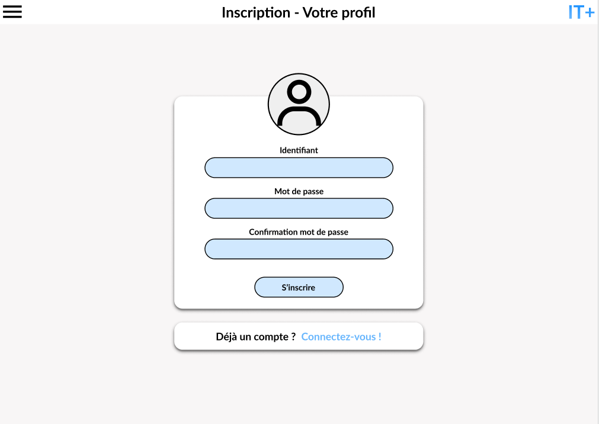
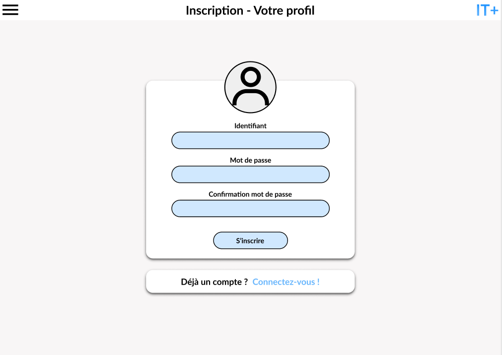

IT+
RÉALISATION
2022
MEMBRE(S) DU PROJET
Hugo Brenet, Félix Brinet & Thomas Dagorne
LOGICIEL(S) UTILISÉ(S)
Figma & Visual Studio Code
PROJET LIÉ
Ce projet a pour objectif de concevoir un Site Internet pour l’entreprise fictive "IT+". Cette entreprise propose de la récupération, de la vente et de l’achat de composants et matériels informatiques.
Ce site internet est complètement fonctionnel. Il propose la création d’un compte client ainsi qu’un système de panier et d’historique. Autre fonctionnalité, le site vous permet de suivre en temps réel la quantité de métaux précieux qui se trouvent dans les composants électroniques que vous recyclez en vendant vos produits.
Nous étions trois à travailler sur ce projet. En plus de l’HTML et du CSS, nous avons utilisé du PHP et du MySQLi.
Dans un premier temps, je me suis concentré sur la réalisation d’un Wireframe sur le logiciel Figma. Une fois ce travail terminé, j’ai travaillé sur l’ergonomie et le design du site en m’inspirant de mon wireframe.
 
